Author: Sandipan Dey
Table of Content
In this chapter, we shall discuss recent advances in image processing with deep learning. We'll start by differentiating between classical and deep learning techniques, followed by a conceptual section on convolutional neural networks (CNN), the deep neural net architectures particularly useful for image processing. Then we'll continue our discussion on the image classification problem with a couple of image datasets and how to implement it with TensorFlow and Keras, two very popular deep learning libraries. Also, we'll see how to train deep CNN architectures and use them for predictions.
The topics to be covered in this chapter are as follows:
The main goal of Machine Learning (ML) is generalization; that is, we train an algorithm on a training dataset and we want the algorithm to work with high performance (accuracy) on an unseen dataset. In order to solve a complex image processing task (such as image classification), the more training data we have, we may expect better generalization—ability of the ML model learned, provided we have taken care of overfitting (for example, with regularization). But with traditional ML techniques, not only does it become computationally very expensive with huge training data, but also, the learning (improvement in generalization) often stops at a certain point. Also, the traditional ML algorithms often need lots of domain expertise and human intervention and they are only capable of what they are designed for—nothing more and nothing less. This is where deep learning models are very promising
Some of the well-known and widely accepted definitions of deep learning are as follows:
For example, for an image classification problem, a deep learning model learns the image classes in an incremental manner using its hidden layer architecture.
First, it automatically extracts low-level features such as identifying light or dark regions, and then it extracts high-level features such as edges. Later, it extracts the highest-level features, such as shapes, so that they can be classified.
Every node or neuron represents a small aspect of the whole image. When put together, they depict the whole image. They are capable of representing the image fully. Moreover, every node and every neuron in the network is assigned weights. These weights represent the actual weight of the neuron with respect to the strength of its relationship with the output. These weights can be adjusted while the models are developed
Let's now see the differences between a ML and a deep learning model when used in image classification diagrammatically (cat versus dog images).
Traditional ML will have feature extraction and a classifier to give a solution to any problem
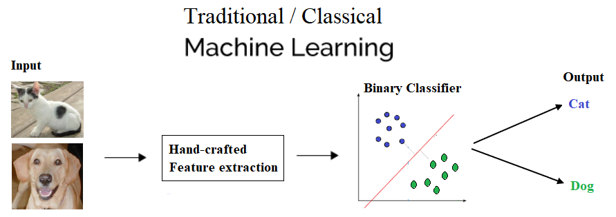
With deep learning, you can see the hidden layers that we talked about and the decision making in action
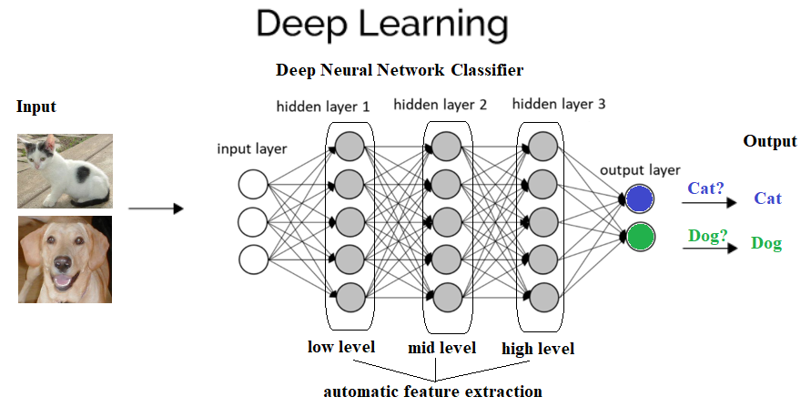
As discussed earlier, if you have more data, the best choice would be deep networks that perform much better with ample data. Many a time, the more data used, the more accurate the result. The classical ML method needs a complex set of ML algorithms and more data is only going to hamper its accuracy. Complex methods then need to be applied to make up for the less accuracy. Moreover, even learning is affected—it is almost stopped at some point in time when more training data is added to train the model. This is how this can be depicted graphically
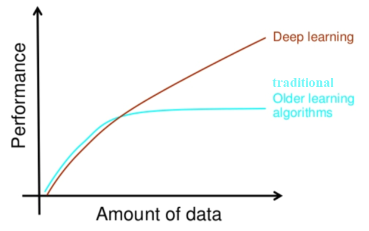
CNNs are deep neural networks for which the primarily used input is images. CNNs learn the filters (features) that are hand-engineered in traditional algorithms. This independence from prior knowledge and human effort in feature design is a major advantage. They also reduce the number of parameters to be learned with their shared-weights architecture and possess translation invariance characteristics. In the next subsection, we'll discuss the general architecture of a CNN and how it works
The next screenshot shows the typical architecture of a CNN. It consists of one or more convolutional layer, followed by a nonlinear ReLU activation layer, a pooling layer, and, finally, one (or more) fully connected (FC) layer, followed by an FC softmax layer, for example, in the case of a CNN designed to solve an image classification problem.There can be multiple convolution ReLU pooling sequences of layers in the network, making the neural network deeper and useful for solving complex image processing tasks, as seen in the following diagram
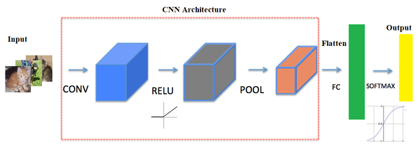
The next few sections describe each of the layers and how they work.
The main building block of CNN is the convolutional layer. The convolutional layer consists of a bunch of convolution filters (kernels), which we already discussed in detail in Chapter 2, Sampling, Fourier Transform, and Convolution. The convolution is applied on the input image using a convolution filter to produce a feature map. On the left side is the input to the convolutional layer; for example, the input image. On the right is the convolution filter, also called the kernel. As usual, the convolution operation is performed by sliding this filter over the input. At every location, the sum of element-wise matrix multiplication goes into the feature map. A convolutional layer is represented by its width, height (the size of a filter is width x height), and depth (number of filters). Stride specifies how much the convolution filter will be moved at each step (the default value is 1). Padding refers to the layers of zeros to surround the input (generally used to keep the input and output image size the same, also known as same padding). The following screenshot shows how 3 x 3 x 3 convolution filters are applied on an RGB image, the first with valid padding and the second with the computation with two such filters with the size of the stride=padding=1
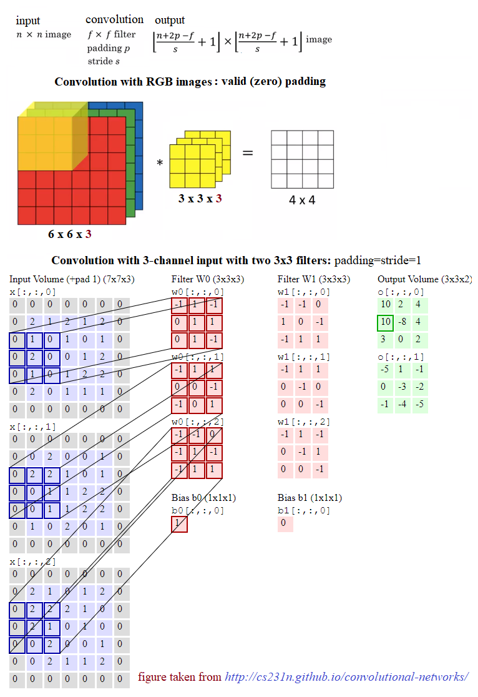
After a convolution operation, a pooling operation is generally performed to reduce dimensionality and the number of parameters to be learned, which shortens the training time, requires less data to train, and combats overfitting. Pooling layers downsample each feature map independently, reducing the height and width, but keeping the depth intact. The most common type of pooling is max pooling, which just takes the maximum value in the pooling window. Contrary to the convolution operation, pooling has no parameters. It slides a window over its input and simply takes the max value in the window. Similar to a convolution, the window size and stride for pooling can be specified.
For any kind of neural network to be powerful, it needs to contain non-linearity. The result of the convolution operation is hence passed through the non-linear activation function. ReLU activation is used in general to achieve non-linearity (and to combat the vanishing gradient problem with sigmoid activation). So, the values in the final feature maps are not actually the sums, but the relu function applied to them
After the convolutional and pooling layers, generally a couple of FC layers are added to wrap up the CNN architecture. The output of both convolutional and pooling layers are 3D volumes, but an FC layer expects a 1D vector of numbers. So, the output of the final pooling layer needs to be flattened to a vector, and that becomes the input to the FC layer. Flattening is simply arranging the 3D volume of numbers into a 1D vector
Dropout is the most popular regularization technique for deep neural networks. Dropout is used to prevent overfitting, and it is typically used to increase the performance (accuracy) of the deep learning task on the unseen dataset. During training time, at each iteration, a neuron is temporarily dropped or disabled with some probability, p. This means all the input and output to this neuron will be disabled at the current iteration. This hyperparameter p is called the dropout rate, and it's typically a number around 0.5, corresponding to 50% of the neurons being dropped out
In this section, we shall revisit the problem of handwritten digits classification (with the MNIST dataset), but this time with deep neural networks. We are going to solve the problem using two very popular deep learning libraries, namely TensorFlow and Keras. TensorFlow (TF) is the most famous library used in production for deep learning models. It has a very large and awesome community. However, TensorFlow is not that easy to use. On the other hand, Keras is a high level API built on TensorFlow. It is more user-friendly and easy to use compared to TF, although it provides less control over low-level structures. Low-level libraries provide more flexibility. Hence TF can be tweaked much more as compared to Keras
First, we shall start with a very simple deep neural network, one containing only a single FC hidden layer (with ReLU activation) and a softmax FC layer, with no convolutional layer. The next screenshot shows the network upside down. The input is a flattened image containing 28 x 28 nodes and 1,024 nodes in the hidden layer and 10 output nodes, corresponding to each of the digits to be classified
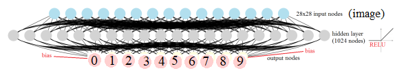
Now let's implement the deep learning image classification with TF. First, we need to load the mnist dataset and divide the training images into two parts, the first one being the larger (we use 50k images) for training, and the second one (10k images) to be used for validation. Let's reformat the labels to represent the image classes with one-hot encoded binary vectors. Then the tensorflow graph needs to be initialized along with the variable, constant, and placeholder tensors. A mini-batch stochastic gradient descent (SGD) optimizer is to be used as the learning algorithm with a batch size of 256, to minimize the softmax cross-entropy logit loss function with L2 regularizers on the couple of weights layers (with hyperparameter values of λ1=λ2=1). Finally, the TensorFlow session object will be run for 6k steps (mini-batches) and the forward/backpropagation will be run to update the model (weights) learned, with subsequent evaluation of the model on the validation dataset. As can be seen, the accuracy obtained after the final batch completes is 96.5%
x%matplotlib inlineimport numpy as np# import datafrom keras.datasets import mnistimport tensorflow as tf
# load data(X_train, y_train), (X_test, y_test) = mnist.load_data()
np.random.seed(0)train_indices = np.random.choice(60000, 50000, replace=False)valid_indices = [i for i in range(60000) if i not in train_indices]X_valid, y_valid = X_train[valid_indices,:,:], y_train[valid_indices]X_train, y_train = X_train[train_indices,:,:], y_train[train_indices]
print(X_train.shape, X_valid.shape, X_test.shape)xxxxxxxxxxUsing TensorFlow backend.
xxxxxxxxxxDownloading data from https://s3.amazonaws.com/img-datasets/mnist.npz11493376/11490434 [==============================] - 6s 1us/step(50000, 28, 28) (10000, 28, 28) (10000, 28, 28)
xxxxxxxxxximage_size = 28num_labels = 10
def reformat(dataset, labels): dataset = dataset.reshape((-1, image_size * image_size)).astype(np.float32) # Map 1 to [0.0, 1.0, 0.0 ...], 2 to [0.0, 0.0, 1.0 ...] labels = (np.arange(num_labels) == labels[:,None]).astype(np.float32) return dataset, labelsX_train, y_train = reformat(X_train, y_train)X_valid, y_valid = reformat(X_valid, y_valid)X_test, y_test = reformat(X_test, y_test)print('Training set', X_train.shape, X_train.shape)print('Validation set', X_valid.shape, X_valid.shape)print('Test set', X_test.shape, X_test.shape)xxxxxxxxxxTraining set (50000, 784) (50000, 784)Validation set (10000, 784) (10000, 784)Test set (10000, 784) (10000, 784)
xxxxxxxxxxdef accuracy(predictions, labels): return (100.0 * np.sum(np.argmax(predictions, 1) == np.argmax(labels, 1)) / predictions.shape[0])xxxxxxxxxxbatch_size = 256 #128num_hidden_units = 1024lambda1 = 0.05 #0.005 #0.01lambda2 = 0.05 #0.005 #0.01 graph = tf.Graph()with graph.as_default():
# Input data. For the training data, we use a placeholder that will be fed # at run time with a training minibatch. tf_train_dataset = tf.placeholder(tf.float32, shape=(batch_size, image_size * image_size)) tf_train_labels = tf.placeholder(tf.float32, shape=(batch_size, num_labels)) tf_valid_dataset = tf.constant(X_valid) tf_test_dataset = tf.constant(X_test) # Variables. weights1 = tf.Variable(tf.truncated_normal([image_size * image_size, num_hidden_units])) biases1 = tf.Variable(tf.zeros([num_hidden_units]))
# connect inputs to every hidden unit. Add bias layer_1_outputs = tf.nn.relu(tf.matmul(tf_train_dataset, weights1) + biases1)
weights2 = tf.Variable(tf.truncated_normal([num_hidden_units, num_labels])) biases2 = tf.Variable(tf.zeros([num_labels]))
# Training computation. logits = tf.matmul(layer_1_outputs, weights2) + biases2 loss = tf.reduce_mean(tf.nn.softmax_cross_entropy_with_logits(labels=tf_train_labels, logits=logits) + \ lambda1*tf.nn.l2_loss(weights1) + lambda2*tf.nn.l2_loss(weights2)) # Optimizer. optimizer = tf.train.GradientDescentOptimizer(0.003).minimize(loss) # Predictions for the training, validation, and test data. train_prediction = tf.nn.softmax(logits) layer_1_outputs = tf.nn.relu(tf.matmul(tf_valid_dataset, weights1) + biases1) valid_prediction = tf.nn.softmax(tf.matmul(layer_1_outputs, weights2) + biases2) layer_1_outputs = tf.nn.relu(tf.matmul(tf_test_dataset, weights1) + biases1) test_prediction = tf.nn.softmax(tf.matmul(layer_1_outputs, weights2) + biases2) xxxxxxxxxxWARNING:tensorflow:From <ipython-input-4-c8eef06908bd>:30: softmax_cross_entropy_with_logits (from tensorflow.python.ops.nn_ops) is deprecated and will be removed in a future version.Instructions for updating:Future major versions of TensorFlow will allow gradients to flowinto the labels input on backprop by default.See `tf.nn.softmax_cross_entropy_with_logits_v2`.
xxxxxxxxxxnum_steps = 6001
ll = []atr = []av = []
import matplotlib.pylab as plt
with tf.Session(graph=graph) as session: #tf.global_variables_initializer().run() session.run(tf.initialize_all_variables()) print("Initialized") for step in range(num_steps): # Pick an offset within the training data, which has been randomized. # Note: we could use better randomization across epochs. offset = (step * batch_size) % (y_train.shape[0] - batch_size) # Generate a minibatch. batch_data = X_train[offset:(offset + batch_size), :] batch_labels = y_train[offset:(offset + batch_size), :] # Prepare a dictionary telling the session where to feed the minibatch. # The key of the dictionary is the placeholder node of the graph to be fed, # and the value is the numpy array to feed to it. feed_dict = {tf_train_dataset : batch_data, tf_train_labels : batch_labels} _, l, predictions = session.run( [optimizer, loss, train_prediction], feed_dict=feed_dict) if (step % 500 == 0): ll.append(l) a = accuracy(predictions, batch_labels) atr.append(a) print("Minibatch loss at step %d: %f" % (step, l)) print("Minibatch accuracy: %.1f%%" % a) a = accuracy(valid_prediction.eval(), y_valid) av.append(a) print("Validation accuracy: %.1f%%" % a) #images = weights1.eval() images = weights1.eval() @ weights2.eval() plt.figure(figsize=(8,10)) #indices = np.random.choice(num_hidden_units, 225) for j in range(10): #plt.subplot(15,15,j+1);plt.imshow(np.reshape(images[:,indices[j]], (image_size,image_size)), cmap='gray'); plt.subplot(4,3,j+1);plt.imshow(np.reshape(images[:,j], (image_size,image_size)), cmap='gray'); plt.xticks([],[]);plt.yticks([],[]) plt.suptitle('SGD after Step ' + str(step) + ' with lambda1=lambda2=' + str(lambda1), size=20) #plt.tight_layout() plt.show() print("Test accuracy: %.1f%%" % accuracy(test_prediction.eval(), y_test))
xxxxxxxxxxWARNING:tensorflow:From C:\Users\anto\Anaconda3\envs\gpuenv\lib\site-packages\tensorflow\python\util\tf_should_use.py:193: initialize_all_variables (from tensorflow.python.ops.variables) is deprecated and will be removed after 2017-03-02.Instructions for updating:Use `tf.global_variables_initializer` instead.InitializedMinibatch loss at step 0: 70188.093750Minibatch accuracy: 11.3%Validation accuracy: 40.2%
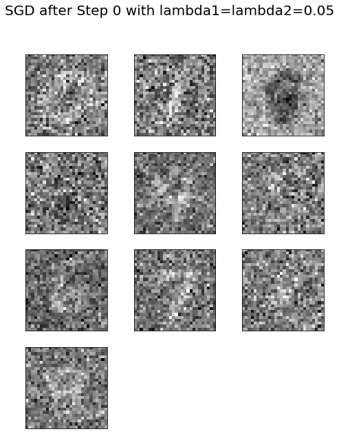
xxxxxxxxxxMinibatch loss at step 500: 13979.980469Minibatch accuracy: 91.0%Validation accuracy: 91.0%
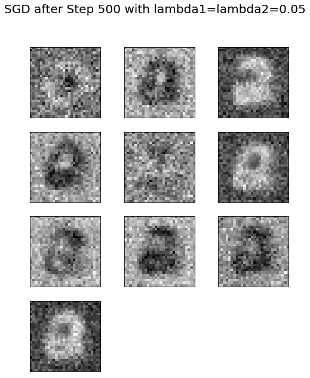
xxxxxxxxxxMinibatch loss at step 1000: 11922.359375Minibatch accuracy: 94.9%Validation accuracy: 91.2%
xxxxxxxxxxMinibatch loss at step 1500: 10250.417969Minibatch accuracy: 98.0%Validation accuracy: 91.8%
xxxxxxxxxxMinibatch loss at step 2000: 8818.380859Minibatch accuracy: 98.0%Validation accuracy: 91.7%
xxxxxxxxxxMinibatch loss at step 2500: 7589.846680Minibatch accuracy: 98.8%Validation accuracy: 91.9%
xxxxxxxxxxMinibatch loss at step 3000: 6532.196289Minibatch accuracy: 98.0%Validation accuracy: 91.7%
xxxxxxxxxxMinibatch loss at step 3500: 5623.300293Minibatch accuracy: 99.6%Validation accuracy: 91.7%
xxxxxxxxxxMinibatch loss at step 4000: 4838.726074Minibatch accuracy: 98.8%Validation accuracy: 91.8%
xxxxxxxxxxMinibatch loss at step 4500: 4164.259277Minibatch accuracy: 98.8%Validation accuracy: 91.9%
xxxxxxxxxxMinibatch loss at step 5000: 3584.074951Minibatch accuracy: 99.2%Validation accuracy: 92.0%
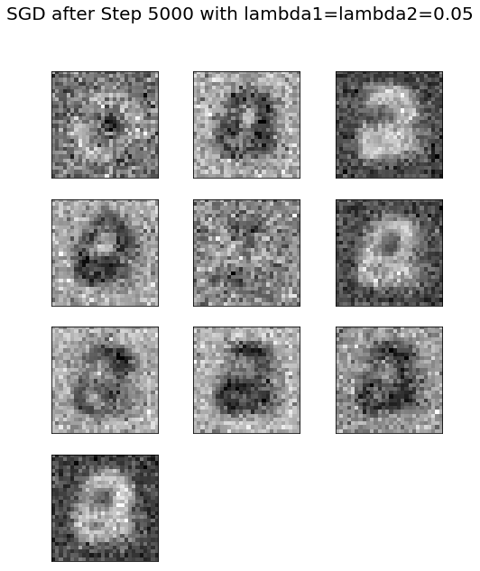
xxxxxxxxxxMinibatch loss at step 5500: 3085.011230Minibatch accuracy: 99.6%Validation accuracy: 91.9%
xxxxxxxxxxMinibatch loss at step 6000: 2655.112793Minibatch accuracy: 99.6%Validation accuracy: 91.7%
xxxxxxxxxxTest accuracy: 92.0%
xxxxxxxxxximages = weights1.eval()pylab.figure(figsize=(18,18))indices = np.random.choice(num_hidden_units, 225)for j in range(225): pylab.subplot(15,15,j+1) pylab.imshow(np.reshape(images[:,indices[j]], (image_size,image_size)), cmap='gray') pylab.xticks([],[]), pylab.yticks([],[]) pylab.subtitle('SGD after Step ' + str(step) + ' with lambda1=lambda2=' + str(lambda1))pylab.show()The preceding visualizes the weights learned for 225 (randomly chosen) hidden nodes in the FC layer 1 of the network after 4,000 steps. Observe that the weights are already learned some features from the input images the model was trained on
xxxxxxxxxxplt.figure(figsize=(8,12))plt.subplot(211) plt.plot(range(0,6001,500), atr, '.-', label='training accuracy')plt.plot(range(0,6001,500), av, '.-', label='validation accuracy')plt.xlabel('GD steps')plt.ylabel('Accuracy')plt.legend(loc='lower right')plt.subplot(212) plt.plot(range(0,6001,500), ll, '.-')plt.xlabel('GD steps')plt.ylabel('Softmax Loss')plt.show()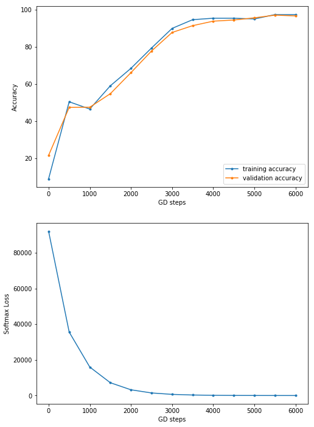
Let's implement the handwritten digits classification with Keras, again using dense FC layers only. This time we shall use one more hidden layer, along with a dropout layer. The next code block shows how to implement the classifier with a few lines of code using the keras.models Sequential() function. We can simply add the layers sequentially to the model. There are a couple of hidden layers introduced, with each of them having 200 nodes along with a dropout in between, with 15% dropout rate. This time, let's use the Adam optimizer (which uses momentum to accelerate SGD). Let's fit the model on the training dataset with 10 epochs (one pass over the entire input dataset). As can be seen, with this simple change in the architecture, an accuracy of 98.04% is obtained on the test images of MNIST
xxxxxxxxxximport kerasfrom keras.models import Sequentialfrom keras.layers import Dense, Flatten, Dropoutfrom keras.layers.convolutional import Conv2D, MaxPooling2Dfrom keras.utils import to_categorical
# import datafrom keras.datasets import mnist
# load data(X_train, y_train), (X_test, y_test) = mnist.load_data()print(X_train.shape, X_test.shape)
# reshape to be [samples][pixels][width][height]X_train = X_train.reshape(X_train.shape[0], 28, 28, 1).astype('float32')X_test = X_test.reshape(X_test.shape[0], 28, 28, 1).astype('float32')
y_train = to_categorical(y_train)y_test = to_categorical(y_test)
num_classes = y_test.shape[1] # number of categories
def convolutional_model(): # create model model = Sequential() model.add(Conv2D(32, kernel_size=(3, 3), activation='relu', input_shape=(28,28,1))) model.add(Conv2D(64, (3, 3), activation='relu')) model.add(MaxPooling2D(pool_size=(2, 2))) model.add(Dropout(0.25)) model.add(Flatten()) model.add(Dense(128, activation='relu')) model.add(Dropout(0.5)) model.add(Dense(num_classes, activation='softmax')) # compile model model.compile(optimizer='adam', loss='categorical_crossentropy', metrics=['accuracy']) return model
# build the modelmodel = convolutional_model()model.summary()
# fit the modelmodel.fit(X_train, y_train, validation_data=(X_test, y_test), epochs=10, batch_size=200, verbose=2)
# evaluate the modelscores = model.evaluate(X_test, y_test, verbose=0)print("Accuracy: {} \n Error: {}".format(scores[1], 100-scores[1]*100))xxxxxxxxxx(60000, 28, 28) (10000, 28, 28)WARNING:tensorflow:From c:\users\anto\anaconda3\envs\25112019\lib\site-packages\tensorflow\python\framework\op_def_library.py:263: colocate_with (from tensorflow.python.framework.ops) is deprecated and will be removed in a future version.Instructions for updating:Colocations handled automatically by placer.WARNING:tensorflow:From c:\users\anto\anaconda3\envs\25112019\lib\site-packages\keras\backend\tensorflow_backend.py:3445: calling dropout (from tensorflow.python.ops.nn_ops) with keep_prob is deprecated and will be removed in a future version.Instructions for updating:Please use `rate` instead of `keep_prob`. Rate should be set to `rate = 1 - keep_prob`._________________________________________________________________Layer (type) Output Shape Param #=================================================================conv2d_1 (Conv2D) (None, 26, 26, 32) 320_________________________________________________________________conv2d_2 (Conv2D) (None, 24, 24, 64) 18496_________________________________________________________________max_pooling2d_1 (MaxPooling2 (None, 12, 12, 64) 0_________________________________________________________________dropout_1 (Dropout) (None, 12, 12, 64) 0_________________________________________________________________flatten_1 (Flatten) (None, 9216) 0_________________________________________________________________dense_1 (Dense) (None, 128) 1179776_________________________________________________________________dropout_2 (Dropout) (None, 128) 0_________________________________________________________________dense_2 (Dense) (None, 10) 1290=================================================================Total params: 1,199,882Trainable params: 1,199,882Non-trainable params: 0_________________________________________________________________WARNING:tensorflow:From c:\users\anto\anaconda3\envs\25112019\lib\site-packages\tensorflow\python\ops\math_ops.py:3066: to_int32 (from tensorflow.python.ops.math_ops) is deprecated and will be removed in a future version.Instructions for updating:Use tf.cast instead.Train on 60000 samples, validate on 10000 samplesEpoch 1/10- 8s - loss: 1.5270 - acc: 0.8420 - val_loss: 0.0757 - val_acc: 0.9778Epoch 2/10- 3s - loss: 0.1268 - acc: 0.9627 - val_loss: 0.0462 - val_acc: 0.9860Epoch 3/10- 3s - loss: 0.0935 - acc: 0.9722 - val_loss: 0.0423 - val_acc: 0.9867Epoch 4/10- 3s - loss: 0.0760 - acc: 0.9767 - val_loss: 0.0407 - val_acc: 0.9864Epoch 5/10- 3s - loss: 0.0646 - acc: 0.9812 - val_loss: 0.0434 - val_acc: 0.9875Epoch 6/10- 3s - loss: 0.0597 - acc: 0.9821 - val_loss: 0.0417 - val_acc: 0.9882Epoch 7/10- 3s - loss: 0.0489 - acc: 0.9846 - val_loss: 0.0378 - val_acc: 0.9897Epoch 8/10- 3s - loss: 0.0488 - acc: 0.9847 - val_loss: 0.0382 - val_acc: 0.9899Epoch 9/10- 4s - loss: 0.0440 - acc: 0.9865 - val_loss: 0.0372 - val_acc: 0.9881Epoch 10/10- 3s - loss: 0.0399 - acc: 0.9873 - val_loss: 0.0375 - val_acc: 0.9906Accuracy: 0.9906Error: 0.9399999999999977
Let's visualize the architecture of the neural network we designed with Keras. The following code snippet will allow us to save the model (network) architecture in an image
xxxxxxxxxx# pip install pydot_ng ## install pydot_ng if not already installedimport pydot as pydotfrom keras.utils import plot_modelplot_model(model, to_file='../images/model.png')xxxxxxxxxxUsing TensorFlow backend.
xxxxxxxxxxfrom keras.models import Modelimport matplotlib.pylab as pltimport numpy as np
intermediate_layer_model = Model(inputs=model.input, outputs=model.get_layer('conv2d_1').output)intermediate_output = intermediate_layer_model.predict(X_train)print(model.input.shape, intermediate_output.shape)fig = plt.figure(figsize=(15,7))fig.subplots_adjust(left=0, right=1, bottom=0, top=1, hspace=0.05, wspace=0.05) plt.gray()i = 1 for c in range(32): plt.subplot(4, 8, c+1), plt.imshow(intermediate_output[i,:,:,c]), plt.axis('off')plt.show()xxxxxxxxxx<matplotlib.figure.Figure at 0x18b0e633438>
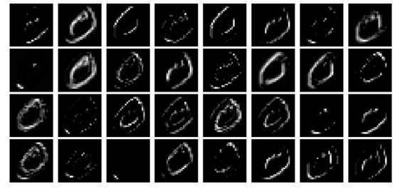
xxxxxxxxxxintermediate_layer_model = Model(inputs=model.input, outputs=model.get_layer('conv2d_2').output)intermediate_output = intermediate_layer_model.predict(X_train)print(model.input.shape, intermediate_output.shape)xxxxxxxxxx(?, 28, 28, 1) (60000, 24, 24, 64)
xxxxxxxxxxfig = plt.figure(figsize=(15,15))fig.subplots_adjust(left=0, right=1, bottom=0, top=1, hspace=0.05, wspace=0.05) plt.gray()i = 1 for c in range(64): plt.subplot(8, 8, c+1), plt.imshow(intermediate_output[i,:,:,c]), plt.axis('off')plt.show()xxxxxxxxxximport kerasfrom keras.models import Sequentialfrom keras.layers import Densefrom keras.utils import to_categoricalfrom keras.layers.convolutional import Conv2D # to add convolutional layersfrom keras.layers.convolutional import MaxPooling2D # to add pooling layersfrom keras.layers import Flatten # to flatten data for fully connected layers
# import datafrom keras.datasets import mnist# load data(X_train, y_train), (X_test, y_test) = mnist.load_data()print(X_train.shape, X_test.shape)# (60000, 28, 28) (10000, 28, 28)# reshape to be [samples][pixels][width][height]X_train = X_train.reshape(X_train.shape[0], 28, 28, 1).astype('float32')X_test = X_test.reshape(X_test.shape[0], 28, 28, 1).astype('float32')X_train = X_train / 255 # normalize training dataX_test = X_test / 255 # normalize test datay_train = to_categorical(y_train)y_test = to_categorical(y_test)num_classes = y_test.shape[1] # number of categories
def convolutional_model():
# create model model = Sequential() model.add(Conv2D(64, (5, 5), strides=(1, 1), activation='relu', input_shape=(28, 28, 1))) model.add(MaxPooling2D(pool_size=(2, 2), strides=(2, 2))) model.add(Flatten()) model.add(Dense(100, activation='relu')) model.add(Dense(num_classes, activation='softmax')) # compile model model.compile(optimizer='adam', loss='categorical_crossentropy', metrics=['accuracy']) return model
# build the modelmodel = convolutional_model()model.summary()# fit the modelmodel.fit(X_train, y_train, validation_data=(X_test, y_test), epochs=10, batch_size=200, verbose=2)# evaluate the modelscores = model.evaluate(X_test, y_test, verbose=0)print("Accuracy: {} \n Error: {}".format(scores[1], 100-scores[1]*100))xxxxxxxxxxC:\Users\Sandipan.Dey\Anaconda\envs\ana41py35\lib\site-packages\h5py\__init__.py:34: FutureWarning: Conversion of the second argument of issubdtype from `float` to `np.floating` is deprecated. In future, it will be treated as `np.float64 == np.dtype(float).type`.from ._conv import register_converters as _register_convertersUsing TensorFlow backend.
xxxxxxxxxx(60000, 28, 28) (10000, 28, 28)_________________________________________________________________Layer (type) Output Shape Param #=================================================================conv2d_1 (Conv2D) (None, 24, 24, 64) 1664_________________________________________________________________max_pooling2d_1 (MaxPooling2 (None, 12, 12, 64) 0_________________________________________________________________flatten_1 (Flatten) (None, 9216) 0_________________________________________________________________dense_1 (Dense) (None, 100) 921700_________________________________________________________________dense_2 (Dense) (None, 10) 1010=================================================================Total params: 924,374Trainable params: 924,374Non-trainable params: 0_________________________________________________________________Train on 60000 samples, validate on 10000 samplesEpoch 1/10- 49s - loss: 0.2398 - acc: 0.9289 - val_loss: 0.0721 - val_acc: 0.9781Epoch 2/10- 50s - loss: 0.0671 - acc: 0.9799 - val_loss: 0.0504 - val_acc: 0.9832Epoch 3/10- 47s - loss: 0.0453 - acc: 0.9866 - val_loss: 0.0391 - val_acc: 0.9876Epoch 4/10- 48s - loss: 0.0330 - acc: 0.9897 - val_loss: 0.0358 - val_acc: 0.9888Epoch 5/10- 46s - loss: 0.0281 - acc: 0.9913 - val_loss: 0.0411 - val_acc: 0.9867Epoch 6/10- 47s - loss: 0.0212 - acc: 0.9936 - val_loss: 0.0343 - val_acc: 0.9889Epoch 7/10- 47s - loss: 0.0183 - acc: 0.9943 - val_loss: 0.0375 - val_acc: 0.9878Epoch 8/10- 51s - loss: 0.0131 - acc: 0.9961 - val_loss: 0.0378 - val_acc: 0.9879Epoch 9/10- 46s - loss: 0.0110 - acc: 0.9965 - val_loss: 0.0346 - val_acc: 0.9892Epoch 10/10- 46s - loss: 0.0081 - acc: 0.9978 - val_loss: 0.0371 - val_acc: 0.9890Accuracy: 0.989Error: 1.0999999999999943
xxxxxxxxxxfrom keras.models import Modelimport matplotlib.pylab as pltimport numpy as npintermediate_layer_model = Model(inputs=model.input, outputs=model.get_layer('conv2d_1').output)intermediate_output = intermediate_layer_model.predict(X_train)print(model.input.shape, intermediate_output.shape)fig = plt.figure(figsize=(15,15))fig.subplots_adjust(left=0, right=1, bottom=0, top=1, hspace=0.05, wspace=0.05) plt.gray()i = 2 for c in range(64): plt.subplot(8, 8, c+1), plt.imshow(intermediate_output[i,:,:,c]), plt.axis('off')plt.show()xxxxxxxxxx(?, 28, 28, 1) (60000, 24, 24, 64)
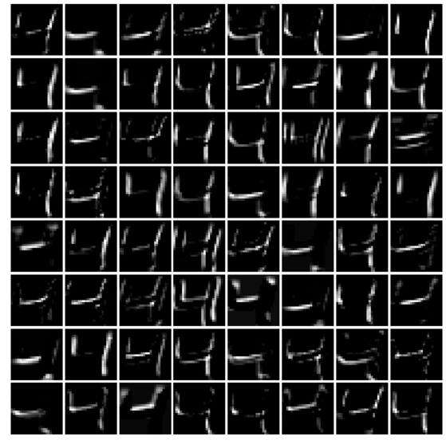
Let's implement the handwritten digits classification with Keras, again using dense FC layers only. This time we shall use one more hidden layer, along with a dropout layer. The next code block shows how to implement the classifier with a few lines of code using the keras.models Sequential() function. We can simply add the layers sequentially to the model. There are a couple of hidden layers introduced, with each of them having 200 nodes along with a dropout in between, with 15% dropout rate. This time, let's use the Adam optimizer (which uses momentum to accelerate SGD). Let's fit the model on the training dataset with 10 epochs (one pass over the entire input dataset). As can be seen, with this simple change in the architecture, an accuracy of 98.04% is obtained on the test images of MNIST
xxxxxxxxxximport kerasfrom keras.models import Sequentialfrom keras.layers import Dense, Flatten, Dropoutfrom keras.utils import to_categorical
# import datafrom keras.datasets import mnist# load data(X_train, y_train), (X_test, y_test) = mnist.load_data()print(X_train.shape, X_test.shape)# (60000, 28, 28) (10000, 28, 28)# reshape to be [samples][pixels][width][height]X_train = X_train.reshape(X_train.shape[0], 28, 28, 1).astype('float32')X_test = X_test.reshape(X_test.shape[0], 28, 28, 1).astype('float32')X_train = X_train / 255 # normalize training dataX_test = X_test / 255 # normalize test datay_train = to_categorical(y_train)y_test = to_categorical(y_test)num_classes = y_test.shape[1] # number of categories
def FC_model():
# create model model = Sequential() model.add(Flatten(input_shape=(28, 28, 1))) model.add(Dense(200, activation='relu')) model.add(Dropout(0.15)) model.add(Dense(200, activation='relu')) model.add(Dense(num_classes, activation='softmax')) # compile model model.compile(optimizer='adam', loss='categorical_crossentropy', metrics=['accuracy']) return model
# build the modelmodel = FC_model()model.summary()# fit the modelmodel.fit(X_train, y_train, validation_data=(X_test, y_test), epochs=10, batch_size=200, verbose=2)# evaluate the modelscores = model.evaluate(X_test, y_test, verbose=0)print("Accuracy: {} \n Error: {}".format(scores[1], 100-scores[1]*100))xxxxxxxxxx(60000, 28, 28) (10000, 28, 28)WARNING:tensorflow:From C:\Users\anto\Anaconda3\envs\gpuenv\lib\site-packages\keras\backend\tensorflow_backend.py:74: The name tf.get_default_graph is deprecated. Please use tf.compat.v1.get_default_graph instead.WARNING:tensorflow:From C:\Users\anto\Anaconda3\envs\gpuenv\lib\site-packages\keras\backend\tensorflow_backend.py:517: The name tf.placeholder is deprecated. Please use tf.compat.v1.placeholder instead.WARNING:tensorflow:From C:\Users\anto\Anaconda3\envs\gpuenv\lib\site-packages\keras\backend\tensorflow_backend.py:4138: The name tf.random_uniform is deprecated. Please use tf.random.uniform instead.WARNING:tensorflow:From C:\Users\anto\Anaconda3\envs\gpuenv\lib\site-packages\keras\backend\tensorflow_backend.py:133: The name tf.placeholder_with_default is deprecated. Please use tf.compat.v1.placeholder_with_default instead.WARNING:tensorflow:From C:\Users\anto\Anaconda3\envs\gpuenv\lib\site-packages\keras\backend\tensorflow_backend.py:3445: calling dropout (from tensorflow.python.ops.nn_ops) with keep_prob is deprecated and will be removed in a future version.Instructions for updating:Please use `rate` instead of `keep_prob`. Rate should be set to `rate = 1 - keep_prob`.WARNING:tensorflow:From C:\Users\anto\Anaconda3\envs\gpuenv\lib\site-packages\keras\optimizers.py:790: The name tf.train.Optimizer is deprecated. Please use tf.compat.v1.train.Optimizer instead.WARNING:tensorflow:From C:\Users\anto\Anaconda3\envs\gpuenv\lib\site-packages\keras\backend\tensorflow_backend.py:3295: The name tf.log is deprecated. Please use tf.math.log instead._________________________________________________________________Layer (type) Output Shape Param #=================================================================flatten_1 (Flatten) (None, 784) 0_________________________________________________________________dense_1 (Dense) (None, 200) 157000_________________________________________________________________dropout_1 (Dropout) (None, 200) 0_________________________________________________________________dense_2 (Dense) (None, 200) 40200_________________________________________________________________dense_3 (Dense) (None, 10) 2010=================================================================Total params: 199,210Trainable params: 199,210Non-trainable params: 0_________________________________________________________________WARNING:tensorflow:From C:\Users\anto\Anaconda3\envs\gpuenv\lib\site-packages\tensorflow\python\ops\math_grad.py:1250: add_dispatch_support.<locals>.wrapper (from tensorflow.python.ops.array_ops) is deprecated and will be removed in a future version.Instructions for updating:Use tf.where in 2.0, which has the same broadcast rule as np.whereTrain on 60000 samples, validate on 10000 samplesEpoch 1/10- 1s - loss: 0.3531 - acc: 0.8963 - val_loss: 0.1500 - val_acc: 0.9558Epoch 2/10- 1s - loss: 0.1405 - acc: 0.9576 - val_loss: 0.1022 - val_acc: 0.9676Epoch 3/10- 1s - loss: 0.0953 - acc: 0.9714 - val_loss: 0.0840 - val_acc: 0.9743Epoch 4/10- 1s - loss: 0.0757 - acc: 0.9770 - val_loss: 0.0762 - val_acc: 0.9759Epoch 5/10- 1s - loss: 0.0618 - acc: 0.9805 - val_loss: 0.0692 - val_acc: 0.9783Epoch 6/10- 1s - loss: 0.0522 - acc: 0.9835 - val_loss: 0.0625 - val_acc: 0.9796Epoch 7/10- 1s - loss: 0.0444 - acc: 0.9857 - val_loss: 0.0674 - val_acc: 0.9789Epoch 8/10- 1s - loss: 0.0364 - acc: 0.9886 - val_loss: 0.0617 - val_acc: 0.9817Epoch 9/10- 1s - loss: 0.0336 - acc: 0.9888 - val_loss: 0.0665 - val_acc: 0.9797Epoch 10/10- 1s - loss: 0.0304 - acc: 0.9901 - val_loss: 0.0604 - val_acc: 0.9826Accuracy: 0.9826Error: 1.7399999999999949
Let's visualize the architecture of the neural network we designed with Keras. The following code snippet will allow us to save the model (network) architecture in an image
xxxxxxxxxximport pydot_ng as pydotfrom keras.utils import plot_modelplot_model(model, to_file='model.png')The following screenshot shows the output of the previous code block, the neural network architecture
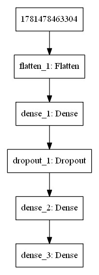
Visualizing the weights in the intermediate layers
Now, let's visualize the weights learned in the intermediate layers. The following Python code visualizes the weights learned for the first 200 hidden units at the first dense layer
xxxxxxxxxxfrom keras.models import Modelimport matplotlib.pylab as pltimport numpy as npW1 = model.get_layer('dense_7').get_weights()W2 = model.get_layer('dense_8').get_weights()W3 = model.get_layer('dense_9').get_weights()print(W1[0].shape, W2[0].shape)W = W1[0] @ W2[0] @ W3[0]print(W.shape)fig = plt.figure(figsize=(5,8))fig.subplots_adjust(left=0, right=1, bottom=0, top=0.95, hspace=0.05, wspace=0.05) plt.gray()for i in range(10): plt.subplot(4, 3, i+1), plt.imshow(np.reshape(W[:, i], (28,28))), plt.axis('off')plt.suptitle('What NN sees', size=20)plt.show()xxxxxxxxxx#! pip install pydot#! pip install pydot_ng graphvizimport pydot_ng as pydotfrom keras.utils import plot_modelplot_model(model, to_file='../images/keras_model.png')In this section, let's discuss popular deep CNNs (for example, VGG-18/19, ResNet, and InceptionNet) used for image classification. The following screenshot shows single-crop accuracies (top-1 accuracy: how many times the correct label has the highest probability predicted by the CNN) of the most relevant entries submitted to the ImageNet challenge, from AlexNet (Krizhevsky et al., 2012), on the far left, to the best performing, Inception-v4 (Szegedy et al., 2016)
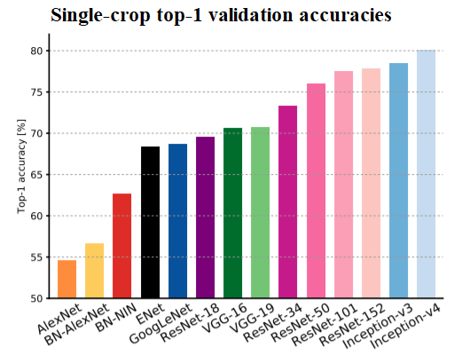
VGG-16/19
The following screenshot shows the architecture of a popular CNN called VGG-16/19. The remarkable thing about the VGG-16 net is that, instead of having so many hyper-parameters, it lets you use a much simpler network where you focus on just having convolutional layers that are just 3 x 3 filters with a stride of 1 and that always use the same padding and make all the max pooling layers 2 x 2 with a stride of 2. It is a really deep network.This network has a total of about 138 million parameters, as seen in the following diagram
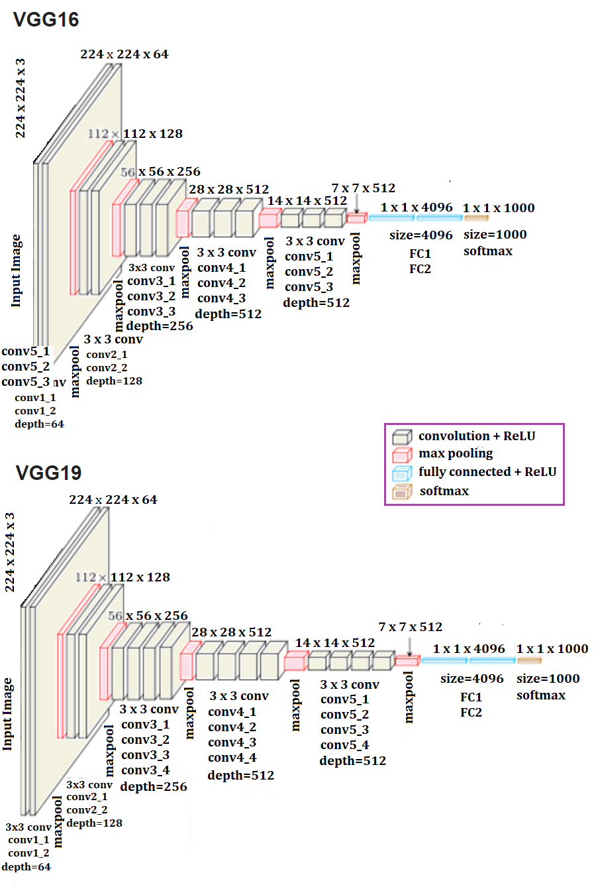
Classifying Cat/Dog images using VGG-16 in Keras
The following code block shows how to fit the model on the training dataset. Let's use 20k images from the training dataset to train the VGG-16 model and 5k images as validation dataset to evaluate the model while training. The weights=None parameter value must be passed to the VGG16() function to ensure that the network is trained from scratch. Note, this will take a long time if not run on a GPU, so a GPU is recommended.
xxxxxxxxxxFor installing TensorFlow with a GPU, refer to this article: https://medium.com/@raza.shahzad/setting-up-tensorflow-gpu-keras-in-conda-on-windows-10-75d4fd498198.
With 20 epochs, the accuracy achieved on the validation dataset is 78.38%. We can tune the hyperparameters to increase the accuracy of the model further, which is left as an exercise to the reader
xxxxxxxxxximport os import numpy as np import cv2 from random import shuffle from tqdm import tqdm # percentage bar for tasks.
# download the cats/dogs images compressed train and test datasets from here: https://www.kaggle.com/c/dogs-vs-cats/data# unzip the train.zip images under the train folder and test.zip images under the test foldertrain = './train' test = './test'lr = 1e-6 # learning rateimage_size = 50 # all the images will be resized to squaure images with this dimension
model_name = 'cats_dogs-{}-{}.model'.format(lr, 'conv2') xxxxxxxxxxdef label_image(image): word_label = image.split('.')[-3] if word_label == 'cat': return 0 elif word_label == 'dog': return 1xxxxxxxxxxdef create_training_data(): training_data = [] for image in tqdm(os.listdir(train)): path = os.path.join(train, image) label = label_image(image) image = cv2.imread(path) image = cv2.resize(image, (image_size, image_size)) training_data.append([np.array(image),np.array(label)]) shuffle(training_data) np.save('train_data.npy', training_data) return training_dataxxxxxxxxxxdef create_test_data(): testing_data = [] for image in tqdm(os.listdir(test)): path = os.path.join(test, image) image = cv2.imread(path) image = cv2.resize(image, (image_size, image_size)) testing_data.append(np.array(image)) shuffle(testing_data) np.save('test_data.npy', testing_data) return testing_dataxxxxxxxxxxtrain_data = create_training_data()xxxxxxxxxx100%|██████████████████████████████████████████████████████████████████| 25000/25000 [03:38<00:00, 114.62it/s]
xxxxxxxxxxlen(train_data)#train_data[0]xxxxxxxxxx25000
xxxxxxxxxxfrom keras.applications.vgg16 import VGG16from keras.optimizers import Adamfrom keras.utils import to_categorical
train = train_data[:-5000] # 20k images for trainingvalid = train_data[-5000:] # 5k images for validationX_train = np.array([i[0] for i in train]).reshape(-1,image_size,image_size,3)y_train = [i[1] for i in train]y_train = to_categorical(y_train)print(X_train.shape, y_train.shape)
X_valid = np.array([i[0] for i in valid]).reshape(-1,image_size,image_size,3)y_valid = [i[1] for i in valid]y_valid = to_categorical(y_valid) # to one-hot encoding
num_classes = y_valid.shape[1] # number of categories
model = VGG16(weights=None, input_shape=(image_size,image_size,3), classes=num_classes) # train VGG16 model from scratchmodel.compile(Adam(lr=lr), "categorical_crossentropy", metrics=["accuracy"]) # "adam"model.summary()
# fit the model, it's going take a long time if not run on GPUmodel.fit(X_train, y_train, validation_data=(X_valid, y_valid), epochs=20, batch_size=256, verbose=2)# evaluate the modelscores = model.evaluate(X_valid, y_valid, verbose=0)print("Accuracy: {} \n Error: {}".format(scores[1], 100-scores[1]*100))xxxxxxxxxx(20000, 50, 50, 3) (20000, 2)_________________________________________________________________Layer (type) Output Shape Param #=================================================================input_6 (InputLayer) (None, 50, 50, 3) 0_________________________________________________________________block1_conv1 (Conv2D) (None, 50, 50, 64) 1792_________________________________________________________________block1_conv2 (Conv2D) (None, 50, 50, 64) 36928_________________________________________________________________block1_pool (MaxPooling2D) (None, 25, 25, 64) 0_________________________________________________________________block2_conv1 (Conv2D) (None, 25, 25, 128) 73856_________________________________________________________________block2_conv2 (Conv2D) (None, 25, 25, 128) 147584_________________________________________________________________block2_pool (MaxPooling2D) (None, 12, 12, 128) 0_________________________________________________________________block3_conv1 (Conv2D) (None, 12, 12, 256) 295168_________________________________________________________________block3_conv2 (Conv2D) (None, 12, 12, 256) 590080_________________________________________________________________block3_conv3 (Conv2D) (None, 12, 12, 256) 590080_________________________________________________________________block3_pool (MaxPooling2D) (None, 6, 6, 256) 0_________________________________________________________________block4_conv1 (Conv2D) (None, 6, 6, 512) 1180160_________________________________________________________________block4_conv2 (Conv2D) (None, 6, 6, 512) 2359808_________________________________________________________________block4_conv3 (Conv2D) (None, 6, 6, 512) 2359808_________________________________________________________________block4_pool (MaxPooling2D) (None, 3, 3, 512) 0_________________________________________________________________block5_conv1 (Conv2D) (None, 3, 3, 512) 2359808_________________________________________________________________block5_conv2 (Conv2D) (None, 3, 3, 512) 2359808_________________________________________________________________block5_conv3 (Conv2D) (None, 3, 3, 512) 2359808_________________________________________________________________block5_pool (MaxPooling2D) (None, 1, 1, 512) 0_________________________________________________________________flatten (Flatten) (None, 512) 0_________________________________________________________________fc1 (Dense) (None, 4096) 2101248_________________________________________________________________fc2 (Dense) (None, 4096) 16781312_________________________________________________________________predictions (Dense) (None, 2) 8194=================================================================Total params: 33,605,442Trainable params: 33,605,442Non-trainable params: 0_________________________________________________________________# Train on 20000 samples, validate on 5000 samples# Epoch 1/10# - 92s - loss: 0.6878 - acc: 0.5472 - val_loss: 0.6744 - val_acc: 0.5750# Epoch 2/20# - 51s - loss: 0.6529 - acc: 0.6291 - val_loss: 0.6324 - val_acc: 0.6534# Epoch 3/20# - 51s - loss: 0.6123 - acc: 0.6649 - val_loss: 0.6249 - val_acc: 0.6472# Epoch 4/20# - 51s - loss: 0.5919 - acc: 0.6842 - val_loss: 0.5902 - val_acc: 0.6828# Epoch 5/20# - 51s - loss: 0.5709 - acc: 0.6992 - val_loss: 0.5687 - val_acc: 0.7054# Epoch 6/20# - 51s - loss: 0.5564 - acc: 0.7159 - val_loss: 0.5620 - val_acc: 0.7142# Epoch 7/20# - 51s - loss: 0.5539 - acc: 0.7137 - val_loss: 0.5698 - val_acc: 0.6976# Epoch 8/20# - 51s - loss: 0.5275 - acc: 0.7371 - val_loss: 0.5402 - val_acc: 0.7298# Epoch 9/20# - 51s - loss: 0.5072 - acc: 0.7536 - val_loss: 0.5240 - val_acc: 0.7444# Epoch 10/20# - 51s - loss: 0.4880 - acc: 0.7647 - val_loss: 0.5127 - val_acc: 0.7544# Epoch 11/20# - 51s - loss: 0.4659 - acc: 0.7814 - val_loss: 0.5594 - val_acc: 0.7164# Epoch 12/20# - 51s - loss: 0.4584 - acc: 0.7813 - val_loss: 0.5689 - val_acc: 0.7124# Epoch 13/20# - 51s - loss: 0.4410 - acc: 0.7952 - val_loss: 0.4863 - val_acc: 0.7704# Epoch 14/20# - 51s - loss: 0.4295 - acc: 0.8022 - val_loss: 0.5073 - val_acc: 0.7596# Epoch 15/20# - 51s - loss: 0.4175 - acc: 0.8084 - val_loss: 0.4854 - val_acc: 0.7688# Epoch 16/20# - 51s - loss: 0.3914 - acc: 0.8259 - val_loss: 0.4743 - val_acc: 0.7794# Epoch 17/20# - 51s - loss: 0.3852 - acc: 0.8286 - val_loss: 0.4721 - val_acc: 0.7810# Epoch 18/20# - 51s - loss: 0.3692 - acc: 0.8364 - val_loss: 0.6765 - val_acc: 0.6826# Epoch 19/20# - 51s - loss: 0.3752 - acc: 0.8332 - val_loss: 0.4805 - val_acc: 0.7760# Epoch 20/20# - 51s - loss: 0.3360 - acc: 0.8586 - val_loss: 0.4711 - val_acc: 0.7838# Accuracy: 0.7838# Error: 21.61999999999999
xxxxxxxxxxfrom keras.models import Modelimport matplotlib.pylab as pltimport numpy as np
intermediate_layer_model = Model(inputs=model.input, outputs=model.get_layer('block1_conv2').output)intermediate_output = intermediate_layer_model.predict(X_train)print(model.input.shape, intermediate_output.shape)xxxxxxxxxx(?, 50, 50, 3) (20000, 50, 50, 64)
xxxxxxxxxxintermediate_layer_model = Model(inputs=model.input, outputs=model.get_layer('block1_conv2').output)intermediate_output = intermediate_layer_model.predict(X_train)fig = plt.figure(figsize=(10,10))fig.subplots_adjust(left=0, right=1, bottom=0, top=1, hspace=0.05, wspace=0.05) plt.gray()i = 3for c in range(64): plt.subplot(8, 8, c+1), plt.imshow(intermediate_output[i,:,:,c]), plt.axis('off')plt.show()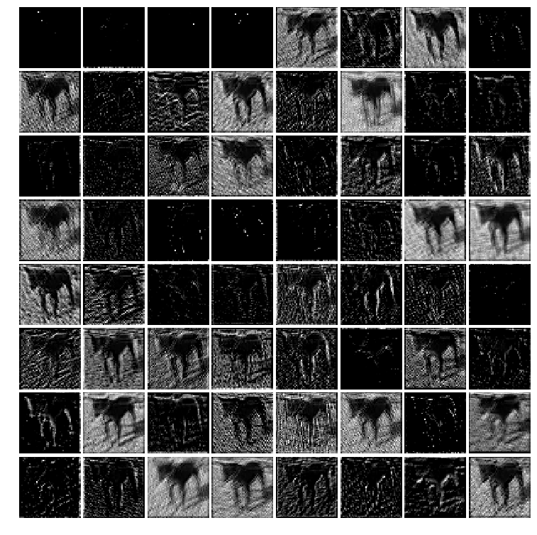
xxxxxxxxxxintermediate_layer_model = Model(inputs=model.input, outputs=model.get_layer('block2_conv2').output)intermediate_output = intermediate_layer_model.predict(X_train)print(model.input.shape, intermediate_output.shape)xxxxxxxxxx(?, 50, 50, 3) (20000, 25, 25, 128)
xxxxxxxxxxfig = plt.figure(figsize=(10,10))fig.subplots_adjust(left=0, right=1, bottom=0, top=1, hspace=0.05, wspace=0.05) plt.gray()i = 3for c in range(128): plt.subplot(13, 10, c+1), plt.imshow(intermediate_output[i,:,:,c]), plt.axis('off')plt.show()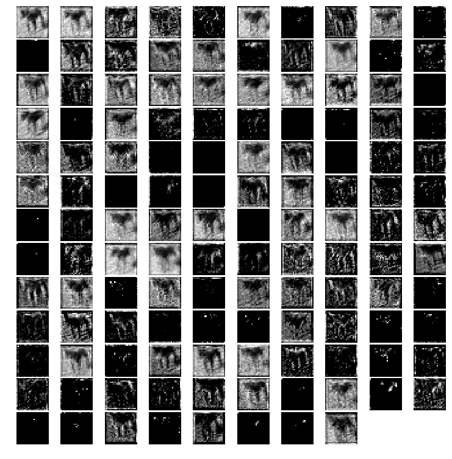
xxxxxxxxxxintermediate_layer_model = Model(inputs=model.input, outputs=model.get_layer('block3_conv3').output)intermediate_output = intermediate_layer_model.predict(X_train)print(model.input.shape, intermediate_output.shape)xxxxxxxxxx(?, 50, 50, 3) (20000, 12, 12, 256)
xxxxxxxxxxfig = plt.figure(figsize=(7,7))fig.subplots_adjust(left=0, right=1, bottom=0, top=1, hspace=0.05, wspace=0.05) plt.gray()i = 3for c in range(256): plt.subplot(16, 16, c+1), plt.imshow(intermediate_output[i,:,:,c]), plt.axis('off')plt.show()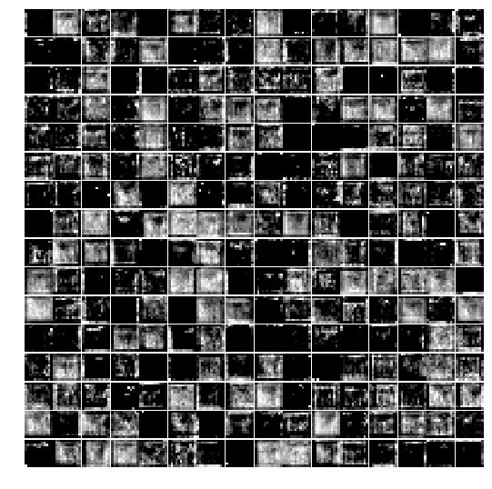
The next code block show how to use the VGG-16 model learned to predict the probability of whether an image is dog or cat from the test images dataset
xxxxxxxxxxtest_data = create_test_data()len(test_data) # only took a subset of the test dataxxxxxxxxxx100%|█████████████████████████████████████████████████████████████████████| 1000/1000 [00:24<00:00, 41.20it/s]1000
xxxxxxxxxxX_test = np.array([i for i in test_data]).reshape(-1,image_size,image_size,3)probs = model.predict(X_test)xxxxxxxxxxprobs = np.round(probs,2)plt.figure(figsize=(20,20))for i in range(100): plt.subplot(10,10,i+1), plt.imshow(X_test[i,:,:,::-1]), plt.axis('off') plt.title("{}, prob={:0.2f}".format('cat' if probs[i][1] < 0.5 else 'dog', max(probs[i][0],probs[i][1])))plt.show()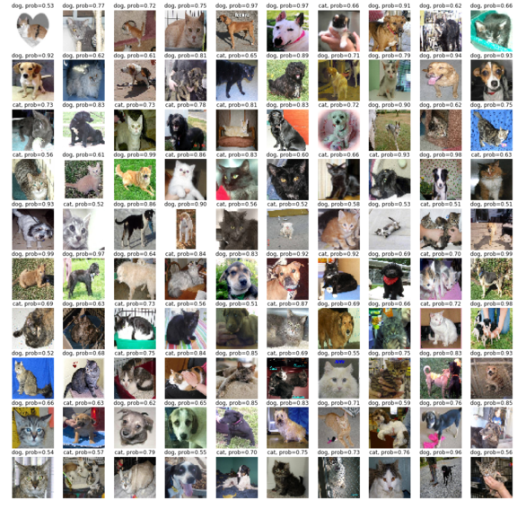
InceptionNet
In the development of CNN classifiers, the inception network is a very important milestone. Before the inception network came into the picture, CNNs used to just stack the convolutional layers to the utmost depths in order to achieve better performance. Inception networks use complex techniques and tricks to meet performance both in terms of speed and accuracy.
Inception networks are evolving constantly and have led to the birth of several new versions of the network. Some of the popular versions are—Inception-v1, v2, v3, v4, and Inception-ResNet. Since there can be huge variations in salient parts and the location of information in images, choosing the right kernel size for the convolution operation becomes tough. A larger kernel is preferred for information that is distributed more globally, and a smaller kernel is preferred for information that is distributed more locally. Deep neural networks suffer from overfitting and vanishing gradient problems. Naively stacking large convolution operations will incur a lot of expenses.
The inception network solves all of the previous issues by adding filters that have multiple sizes that operate on the same level. This causes the network to become wider rather than deeper. The next screenshot shows an inception module with dimension reduction. It performs convolution on the input with three different sizes of filters (1 x 1, 3 x 3, and 5 x 5) and an additional max pooling. The output is concatenated and sent to the next inception module. To make it cheaper, the number of input channels were limited by adding an extra 1 x 1 convolution before the 3 x 3 and 5 x 5 convolutions. Using the dimension reduced inception module, a neural network architecture was built. This was popularly known as GoogleNet (Inception v1). The architecture is shown in the following—GoogleNet has nine such inception modules stacked linearly. It is 22 layers deep (27, including the pooling layers) and uses global average pooling at the end of the last inception module
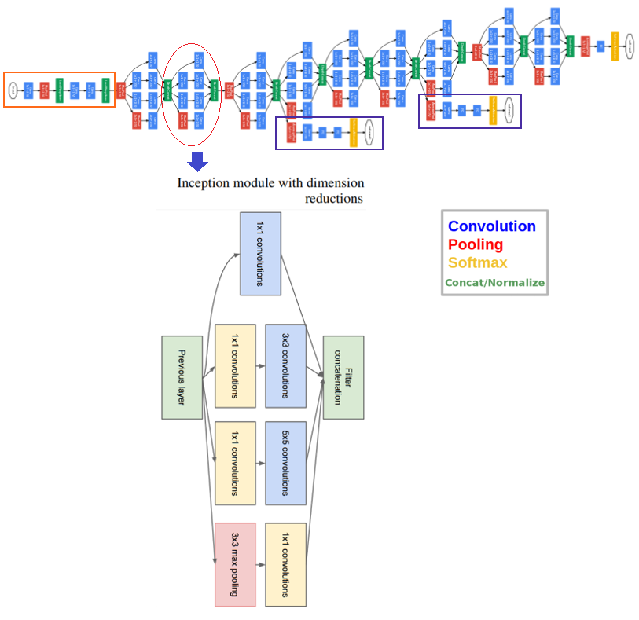 Several versions of the inception net have been introduced to the time of writing (V2, 3, and 4) that are extensions over the previous architecture. Keras provides Inception-v3 models that can be trained from scratch or a pre-trained version (with the weights obtained by training on ImageNet) can be used.
ResNet
Simply stacking the layers won't necessarily increase the network depth. They are difficult to train because of the vanishing gradient problem as well. It is an issue wherein the gradient is backpropagated to previous layers and if this happens repeatedly, the gradient may become infinitely small. Hence, as we get deeper, performance gets heavily affected.
ResNet stands for Residual Network and it introduces shortcuts in the network, which we know by the name of identity shortcut connections. Shortcut connections abide by their name and do the job of skipping one or more layers, hence preventing the stacked layers from degrading performance. The identity layers that are stacked do nothing other than simply stacking identity mappings on the current network. The other architectures can then perform at their expected levels, meaning the deeper models will not produce a training error rate higher than its shallower counterparts.
Here is an example of a 34-layer plain versus residual network
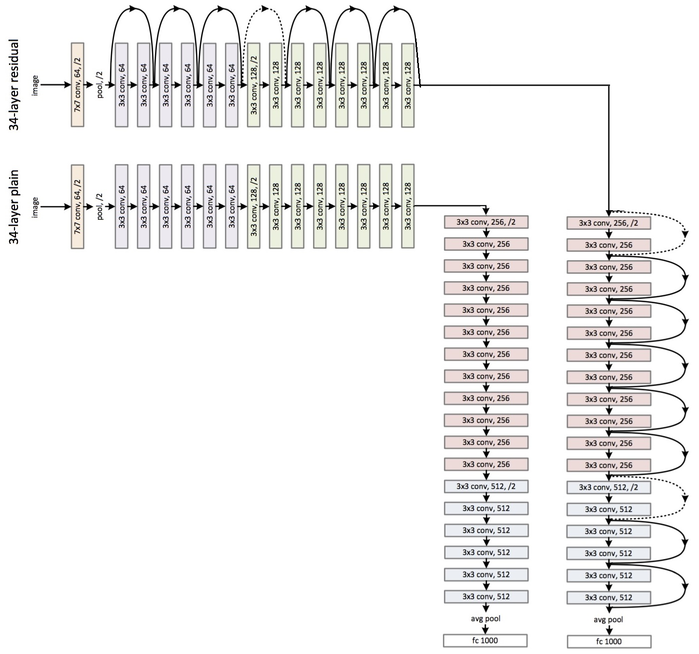
Keras provides the ResNet50 model that can be trained from scratch or a pre-trained network can be loaded.
There are a few more architectures, such as AlexNet and MobileNet, that the reader is encouraged to explore (for example, from here: https://medium.com/@sidereal/cnns-architectures-lenet-alexnet-vgg-googlenet-resnet-and-more-666091488df5)
In this chapter, the recent advances in image processing with deep learning models were introduced. We started by discussing the basic concepts of deep learning, how it's different from traditional ML, and why we need it. Then CNNs were introduced as deep neural networks designed particularly to solve complex image processing and computer vision tasks. The CNN architecture with convolutional, pooling, and FC layers were discussed. Next, we introduced TensorFlow and Keras, two popular deep learning libraries in Python. We showed how test accuracy on the MNIST dataset for handwritten digits classification can be increased with CNNs, then the same using FC layers only. Finally, we discussed a few popular networks such as VGG-16/19, GoogleNet, and ResNet. Kera's VGG-16 model was trained on Kaggle's Dogs vs. Cats competition images and we showed how it performs on the validation image dataset with decent accuracy.
In the next chapter, we'll discuss how to solve more complex image processing tasks (for example, object detection, segmentation, and style transfer) with deep learning models and how to use transfer learning to save training time